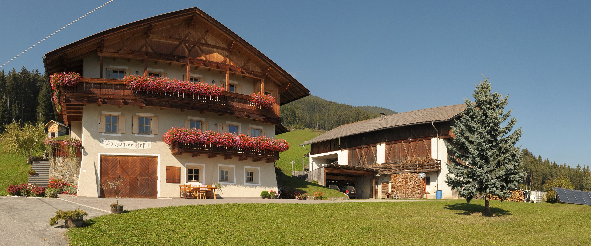

Urlaub auf dem Bauernhof in Südtirol
Ihr Ziel ist der auf 1370 Metern Meereshöhe in Villanders, Südtirol, gelegene Parjöhlerhof der Familie Fink. Der traditionelle Bauernhof umgeben von bewirtschafteten Wiesen und naturbelassenen Wäldern ist ideal für einen erholsamen Urlaub. In mitten der Natur fällt es leicht dem alltäglichen Trott zu entfliehen und die Einfachheit des Lebens zu genießen
Ein Urlaub auf dem Bauernhof bietet Ihnen ein abwechslungsreiches Angebot. Sei es das traditionelle höfische Leben mit den vielen Tieren, die kulturellen Angebote in den nahe liegenden Städten oder die vielen Wandergebiete Südtirols, es ist für jeden etwas dabei.

Vom Parjöhlerhof ausgehend stehen Ihnen vielfältige Freizeitaktivitäten zur Verfügung. Gemütliche Spaziergänge durch die Weinberghänge und den historischen Dorfkern oder herrliche Wanderungen auf der Villanderer Alm. In kultureller Hinsicht können das Künstlerstädtchen Klausen, die Bischofstadt Brixen und die Hauptstadt Bozen besucht werden.